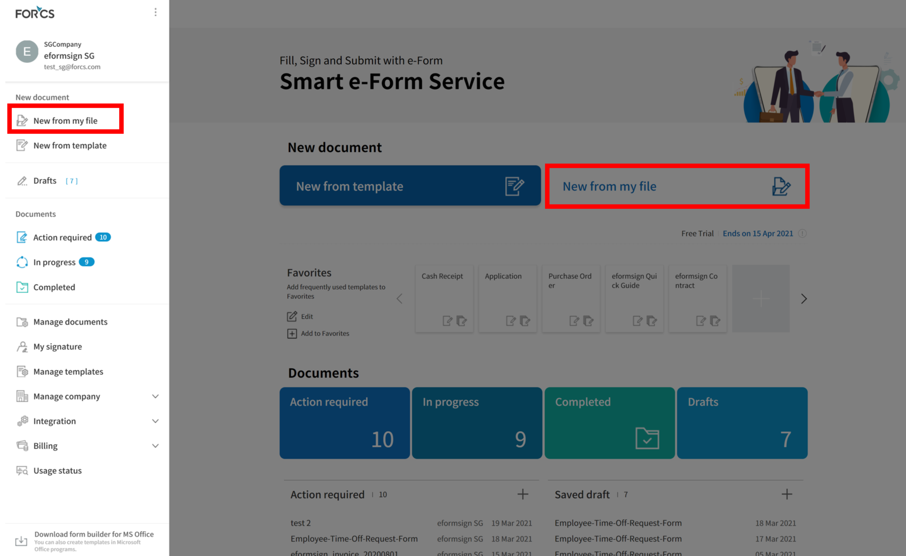
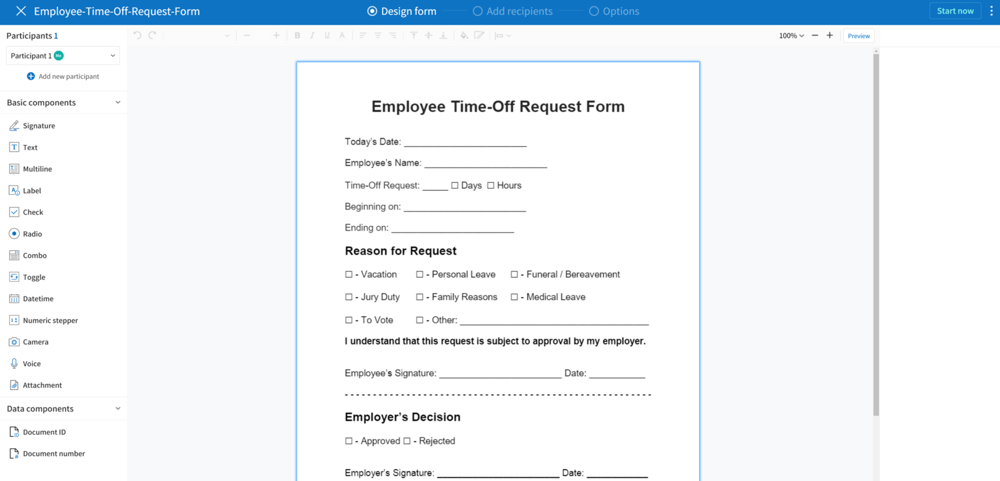
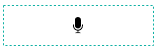

Introduction to Web Form Designer¶
Web Form Designer is a web form editor that allows you to create electronic documents by uploading document files to eformsign and adding components. You can upload files in the New from template or the New from my file menus to create documents using Web Form Designer. After uploading a file, simply click and add the components available in the left tree menu of Web form designer and set the properties of each component. This is all you need to do to create documents with an ease.
Note
File formats that can be uploaded are pdf, hwp, doc, docx, xls, xlsx, ppt, pptx, odt, jpg, png, gif, and tiff. The maximum file size supported is 9MB.
Note
In addition to Web Form Designer, eformsign also provides a Microsoft Office Add-in feature named OZ in Office (Form builder) which allows you to create electronic documents directly in Microsoft Office. To use Form builder, please install the Microsoft Office add-in, and refer to Form Builder.
File Uploading¶
Uploading a file in the New from my file menu.¶
Click the New from my file menu.

Drag and drop the file onto the screen or click the Select a file button and select a file from your computer to upload.

Once the file is uploaded, the Web Form Designer screen will be displayed. You can add components to the document here.

{kind=link}
{kind=link}
{kind=link}
{kind=link}
Overview of Components¶
Components are used to create fields in electronic documents that users can enter information. Many different components including Signature, Check, Date, and Text are provided, and each component can be configured in detail by using the Properties tab.
{kind=link}
Component Types¶
The components provided in eformsign are as follows:
Basic components¶
Signature: Inserts a signature.
Company stamp: Inserts a company stamp.
Text: Enters short text (usually 1 to 2 words).
Handwriting: Allows to trace text shown on the background.
Multiline: Enters long text with multiple lines.
Label: Sets the form ID.
Check: Ticks a check box.
Radio: Selects an item among multiple items (can also be set to select multiple items).
Combo: Displays a drop-down menu that allows you to select an item.
Toggle: Switches to another value if two or more values are entered.
Datetime: Enters a specific date.
Numeric stepper: Enters a number.
Camera: Takes a photo using a camera or selects a photo from an album in devices with a built-in camera (e.g. smartphone, tablet, etc.). Selects an image file in devices without a camera (e.g. desktop PC).
Voice: Records audio in devices with a voice recording function.
Attachment: Attaches a file.
Data components¶
Document ID: Enters the document ID in a document.
Document number: Enters the document number in a document.
Setting Properties for Each Component Type¶
All components have common and unique properties. When you click a component added, the detailed properties of that component will be displayed on the right and you can set the properties. Common properties include ID and Tooltip Text, and the meaning of each property is as follows:
ID: Unique ID that identifies each component. When assigning who can fill out a component, you can use the component ID to do so. You can also use the component ID to extract data in CSV format.
Who can fill this out: Sets which participants are allowed and/or required to fill in the component. All the participants added for this document are shown, and you can check or uncheck the Allowed and Required check boxes for each one. When a documents is sent, components that are checked as Allowed are highlighted in yellow, and components that are check as Required are highlighted in red.
Allowed: Allows the participant to fill in the component.
Required: Requires the participant to fill in the component.
Placeholder: Text displayed as a help message before entering information.
Tooltip Text: In Windows, the text in the Tooltip Text box of a component is displayed in the form of a speech bubble when hovering the mouse over the component. In mobile, the text is displayed on the quick type bar when clicking on the component.
Note
For the Document component which is for providing information, Tooltip Text is not provided.
The description of each component is as follows.
Signature¶
This component is used for signing a signature on a document.
Clicking the signature area displays the Signature pop-up which allows you to sign a signature by drawing, entering text, or using a previously registered signature.

Component Properties
{kind=link}
① ID
Enters the ID of the signature component. For example, the ID of the component can be ‘signerSignature’ for contract signers.
② Available signature Type
Selects the signature type to be used when signing.
Signature: If the user already has a signature added on eformsign, then clicking the signature area or the Signature button inserts the added signature onto the document. If not, then the user manually creates a signature.
Initial: If the user already has an initial added on eformsign, then clicking the signature area or the Initials button inserts the added initial onto the document. If not, then the user manually creates an initial.
Stamp: If the user already has a company stamp added on eformsign, then clicking the signature area or the Stamp button inserts the added stamp onto the document. If not, then the user manually applies a stamp by scanning and uploading a stamp.
Note
In some cases, you may need to use a stamp on a document rather than your own signature. With eformsign, you can also use a stamp image to stamp the signature on a document. To use a stamp image when submitting a document, click the Stamp button after clicking on a signature area, and then select a stamp image and click OK.

③ Signing method
If you check the Disable auto-fill check box, it prevents the signature field from being automatically filled when clicked/touched.
④ Signature Pen Thick
Sets the signature pen thickness.
⑤ Signature Pen Color
Sets the signature pen color.
⑥ Placeholder
Sets the help message displayed before signing.
⑦ Tooltip Text
Displays the description in Tooltip Text when you hover the mouse over a component. On the eformsign app, it is displayed at the top center of the keypad.
Tip
Automatically entering signer and signature date
Click the signature component and then click the icons shown to add the signature date and signer.
{kind=link}
① Signature date: Automatically enters the date signed. By clicking the Add date signed icon, you can set the date format in the date signed component properties on the right.
{kind=link}
② Add signer: Automatically enters the signer information. By clicking the Add signer icon, you can specify the signer information by ID, name, department, title/position, mobile, or phone.
{kind=link}
Note
You can add multiple signed dates and signers for a given signature. You can use this when you need to enter the date signed repeatedly in a given document such as a contract or enter detailed information of a signer.
Company stamp¶
The company stamp component is used for applying a company stamp onto a document. If you add a company stamp component, documents that require a company stamp will show a company stamp pop-up as shown below and you’ll be able to select and apply company stamps that you have permission to access.
Component Properties
{kind=link}
① ID
Enter the ID of the Company stamp component. For example, the ID of the component for applying a company stamp can be named ‘companystamp’.
② Who can fill this out
Sets whether the recipient is required or allowed to fill in this component.
③ Placeholder
Sets the help message displayed.
④ Tooltip Text
Displays the description in Tooltip Text when you hover the mouse over a component.
Text and Multiline¶
Both Text and Multiline components are used to create text fields. The Text component is suitable for short text with 1 to 2 words, and the Multiline component is suitable for long text with more than 1 line.
Component Properties
{kind=link}
① ID
Enters the ID of the Text/Multiline component. For example, the ID of the component in which John Doe, Jane Doe, etc. are entered can be named ‘personName’.
Note
All components must have an ID. An ID is automatically generated when you create a component, but it is recommended to rename it to something you can easily recognize. For example, you can rename the ID of a component for entering John Doe, Jane Doe, etc. as ‘name’. By doing so, it is easier to identify components when deciding whether to display a field to a specific user when you are configuring the Field settings of a template.
② Who can fill this out
Selects who is allowed or required to fill out the component.
③Default value
Sets the default text.
Note
This option can be set only in the Text component. By checking this option, the password is hidden with the password symbol (●) or asterisk (*) when entering text. The password is also hidden with the password symbol in PDFs, and can only be seen when downloaded in the CSV format.
④ Max length
Sets the maximum length of characters (including space) that can be entered. By default, it is set to ‘0’, and in this case, there is no limit for the number of characters
⑤ Keypad type on mobile devices
Selects the keyboard type to be used when entering text in the component. Keyboard Type can only be used in mobile devices such as smartphones and tablets.
⑥ Placeholder
Displays a help message when no value is entered.
⑦ Tooltip Text
Displays the description in Tooltip Text when you hover the mouse over a component.
Handwriting¶
The handwriting component is used to trace a pre-written tex.
You can type in the text to be displayed on a document in which recipients can trace.
Component propertites
{kind=link}
① ID
Enters the ID of the handwriting component.
② Pen Thickness
Sets the pen thickness.
③ Pen Color
Sets the pen color.
④ Show Word Tracing
Allows you to type in the text that will be displayed on the handwriting component.
Label¶
This component is used for setting the form ID of a document.
Component Properties
{kind=link}
① ID
The form ID of the document is automatically generated and displayed. It can also be changed.
The form ID defined here can be applied when editing the document.
②Text
Text entered in the text box is displayed on the document.
Check¶
The Check component is used to check whether an item is checked or not. This component is similar to the Radio component, but the Check component is used for checking the status of an item (whether it is checked or not) while the Radio component is used for checking which item among multiple items is checked.
Tip
Difference between check and radio components
You can select multiple items for check components, but not for radio components.
When data is downloaded in the CSV format, the Check component’s input value is displayed as follows:
When the item is checked: true
When the item is not checked: false
In Word and PowerPoint, the Check component is shown in a rectangular shape. Make sure to enter data inside the rectangular shape.
Component Properties
{kind=link}
① ID
Each Check component must be given a different ID. If multiple check components are given the same ID, then only the value of the last component is displayed.
② Who can fill this out Selects who is allowed or required to fill out the component.
③ Items
You can enter the text to be displayed in the item. You can also add multiple check components so that multiple items can be selected.
④ Checked Style
You can specify the style of each component in Component Properties. The check box is set as the default style, and you can change it to another style (radio button or red circle).
The below example shows how checks are displayed according to the selected style.

Tip
You can select the color and style by clicking the drop-down icon. Once selected, the check style will be shown in the color and style you selected.
{kind=link}
⑤ Unchecked style
You can select the style of each component that is not selected. For unchecked style, checks display square boxes, radio buttons display circles, and circles display nothing.
⑥ Tooltip text
If you hover mouse over a component, the description you entered in the tooltip text will be displayed. In the eformsign app, this will be displayed at the top center of the keypad.
Radio¶
The Radio component is used for checking which item is selected among multiple items. When data is downloaded in the CSV format, the selected item will be displayed.
Component Properties
{kind=link}
① ID
In Component Properties, make sure that all the selected radio buttons are assigned the same ID.
For example, if there are six choices available in a multiple choice question, assign ‘question1’ as the ID for all of them. In the example shown below, the IDs of all the items are set to the same “question 1”.
{kind=link}
② Who can fill this out Selects who is allowed or required to fill out the component.
③ Items
Items with the same ID are shown in the item list of the component properties window and you can edit text easily.
④ Selected style
You can specify the style of each component in Component Properties. The black circle set as the default style, and you can change it to another style in the dropdown menu.
Tip
You can select the color of each style by clicking the drop-down icon. Once selected, the circle will be in the color you selected.
{kind=link}
⑤ Unselected style
You can select the style of each component that is not selected.
⑥ Tooltip Text
If you hover mouse over a component, the description you entered in the tooltip text will be displayed. In the eformsign app, this will be displayed at the top center of the keypad.
Combo¶
The Combo component is used when you need to select one of multiple items.
If you click a Combo component, a list of items is displayed as follows:

Component Properties
{kind=link}
① ID
Enter the ID of the Combo component. For example, the ID of the component for selecting the favorite color can be ‘Favorite color’.
② Who can fill this out Selects who is allowed or required to fill out the component.
③ Item count
Enter the items you want. You can separate the items by pressing Enter.
④ Default item
Select the item set as default.
⑤ Placeholder
Text displayed as a help message before entering information.
⑥ Tooltip Text
If you hover mouse over a component, the description you entered in the tooltip text will be displayed. In the eformsign app, this will be displayed at the top center of the keypad.
Note
If you want to display a message such as ‘Select a color’ in a combo box, then enter ‘Select a color’ and set the default item as ‘Select a color’.
Toggle¶
This component is used for indicating a specific status such as ON/OFF. If you use this component, then the input value is switched according to a defined order whenever the component is clicked.
You can change the status to Good or Bad by clicking the components as follows:

Component Properties
{kind=link}
① ID
Enters the ID of the Toggle component. For example, the ID of the component for the first inspection item can be named ‘APT inspection 1’.
② Who can fill this out Selects who is allowed or required to fill out the component.
③ Items
Enters the list of items that will be toggled whenever the Toggle component is clicked. You can separate the items by pressing Enter.
④ Default item
Select the item set as default.
⑤ Tooltip Text
Displays the description in Tooltip Text when you hover the mouse over a component.
Datetime¶
This component is used for entering a date. Clicking the component displays a date selection window where you can select the date you want.
Component Properties
{kind=link}
① ID
Enters the ID of the Datetime component. For example, the ID of the component for selecting the vacation start date can be named ‘Vacation start date’.
② Who can fill this out Selects who is allowed or required to fill out the component.
③ Default value
Sets the date to be displayed as default. If you check Set today’s date as default date, then today’s date is automatically entered when a document is opened.
④ Format
Sets the format in which date will be displayed. The default setting is date_yyyy-MM-dd.
yyyy: Displays the year.
MM: Displays the month. Must be in uppercase.
dd: Displays the day.
For example, if you want to display the date in the format of ‘15-02-2020’, then enter dd-MM-yyyy in the Format field.
⑤ Minimum Date/Maximum Date
Sets the range of dates that can be selected in the component by specifying the minimum and maximum dates.
⑥ Placeholder
Text displayed as a help message before entering information.
⑦ Tooltip Text
If you hover mouse over a component, the description you entered in the tooltip text will be displayed. In the eformsign app, this will be displayed at the top center of the keypad.
Numeric stepper¶
This component is used for entering a number. Clicking the component displays two arrows on the right, and you can increase or decrease the number by clicking them. In PCs, you can directly enter the desired number into the component by using a keyboard. In smartphones and tablets, you can scroll through the list of numbers and select the one you want.
Component Properties

① ID
Enters the ID of the Numeric component. For example, the ID of the component for entering the number of people in a reservation can be named ‘peopleCount’.
② Who can fill this out Selects who is allowed or required to fill out the component.
③ Default value
Enters the default number to be displayed.
④ Unit of Change
Enters the unit of number that will increase/decrease the number whenever the up/down arrow icon is clicked. For example, if the Unit of Change is set to 100, then when you click the up arrow icon (▲), the number is increased by 100 such as 200, 300, 400, and so on.
⑤ Minimum/Maximum Value
Sets the range of numbers that can be entered into the component by specifying the minimum and maximum values. For example, for the date of birth, setting the Minimum Value to 1900, Maximum Value to the current year, and the Unit of Change to 1. Also, if you enter a value that is lower/higher than the Minimum/Maximum Value, then the Minimum/Maximum Value will be automatically entered. For example, if the Maximum Value is set to 100 and you enter 101, then the number will automatically change to 100.
⑥ Placeholder
Text displayed as a help message before entering information.
⑦ Tooltip Text
If you hover mouse over a component, the description you entered in the tooltip text will be displayed. In the eformsign app, this will be displayed at the top center of the keypad.
Camera¶
This component is for uploading photos (taken with a device with a built-in camera such as smartphones and tablets) to a document. In PCs without a camera, clicking the component displays a window for selecting the desired image file.
If the size of the selected image is larger than the size of the component, then it is resized to fit the component.
Note
For the device with a built-in camera, camera feature will be executed, and for the devices with no camera, a window for selecting an image file will be displayed.

Component Properties

① ID
Enters the ID of the Camera component. For example, the ID of the component that takes the photo of a driver’s license can be ‘driverLicense’.
② Who can fill this out Selects who is allowed or required to fill out the component.
③ Placeholder
Enters the text displayed before taking a photo.
Tip
If you check the Show icon check box, the camera icon is shown on the camera area.

④ Tooltip Text
If you hover mouse over a component, the description you entered in the tooltip text will be displayed. In the eformsign app, this will be displayed at the top center of the keypad.
Voice¶
This component is used for storing recorded voice. You can set the maximum recording time and you can also configure the settings to allow users to only listen to the voice recording.
When you add a Voice component, you can record voice or play a voice recording as follows:

Note
Voice recording is only available in the eformsign app.
Component Properties
{kind=link}
① ID
Enter the ID of the voice component. For example, the ID of the component that plays voice recordings can be named ‘Record1’.
② Who can fill this out Selects who is allowed or required to fill out the component.
③ Placeholder
Enters the text shown before recording.
Tip
If you check the Show icon check box, the mic icon will be displayed on the voice recording area.

④ Tooltip text
If you hover mouse over a component, the description you entered in the tooltip text will be displayed. In the eformsign app, this will be displayed at the top center of the keypad.
Attachment¶
This component is used for attaching a file to a document. When attaching a file to a document by using the Attachment component, the file will be attached at the very end of the document as a new page.
The types and sizes of files that can be attached are as follows:
File type: PDF, JPG, PNG, and GIF
File size: Up to 5MB
Component Properties
{kind=link}
① ID
Enters the ID of the Attachment component. For example, the ID of the component for attaching a resume can be named ‘myResume’.
② Who can fill this out Selects who is allowed or required to fill out the component.
③ Placeholder
Enters the text shown before attachment.
Tip
If you check the Shown icon check box, the clip icon will be displayed on the attachement area.

④ Tooltip text
If you hover mouse over a component, the description you entered in the tooltip text will be displayed. In the eformsign app, this will be displayed at the top center of the keypad.
Document ID and Document number¶
Data components are used for entering document-related information in the document itself. You can select either one of the document ID or document number.
Document ID: A unique ID assigned to all documents in the system and is shown in 32 digit alphanumeric format. E.g. 0077af27a98846c8872f5333920679b7
Document number: Document number set in Template settings > General. For information about setting a document number, refer to Generating and viewing a document number.
Note
The document ID is a unique document ID assigned in the system, so it does not require separate settings.
Component Properties
{kind=link}
① ID
Enter the ID of the Document component. For example, the component ID can be ‘docNum’ for document number.
Configuring Template Settings¶
After uploading a file and adding components with Web Form Designer, you can configure additional settings for documents that will be created from the template such as the document name, document number, and workflow.
In the Design form screen, click the Next button to go to the Configure screen. In the Configure screen, you can configure the five settings shown below.
General: Sets the template name, abbreviation, document name, document number, etc.
Set permissions: Sets the permissions for who can create documents created from the template and who can open, void, or permanently remove documents created from the template.
Workflow: Sets the steps of the document workflow from Start to Complete.
Field: Sets the field default values, auto-filled values, etc.
Notification settings: Sets the notification settings for documents created from the template.
{kind=link}
Important
In order to create documents from a template, you must save and deploy the template. If you save a template but not deploy it, then template does not appear in the New from template page of members with permission to use that template.
Note
For more information on templates, refer to Creating templates using Web Form Designer.